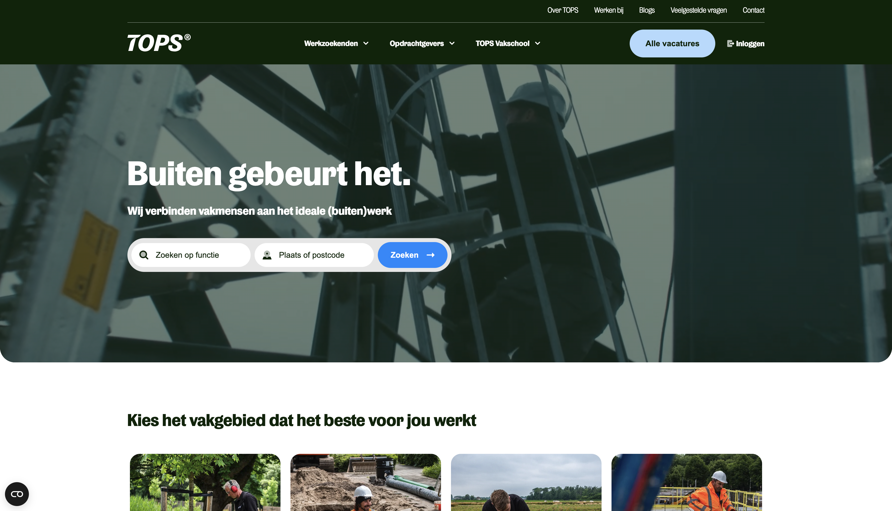
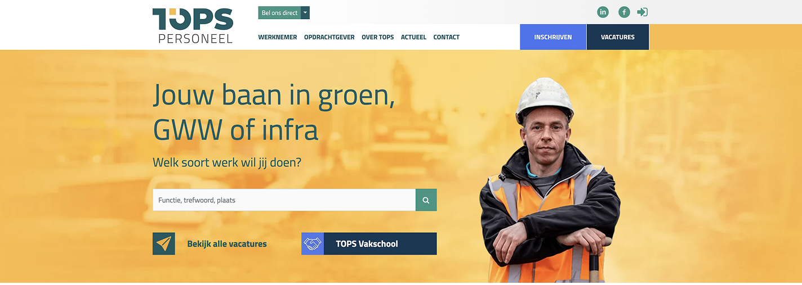

Turning a cluttered recruitment site into a clear path to apply
Redesigning TOPS's recruitment website to remove clutter, sharpen the CTA hierarchy, and make it easy for candidates to find and apply to vacatures.
I ran a full UX audit of the existing site, then led a complete redesign of its structure and visual system in Storyblok, building a component library that gives the TOPS team the freedom to create and extend pages themselves as the site grows.

01 · Context & problem
A recruitment site working against itself
TOPS's recruitment website had cluttered navigation, competing CTAs with no clear primary action, and job listings that were easy to scan past. Weak visual hierarchy and no social proof made it hard for candidates to find and apply to vacatures, and the site's rigid structure made it difficult for the team to build new pages independently.
[Placeholder — add any additional context on the brand, target candidates, or business goals behind the redesign.]
Competing CTAs
No clear primary action meant candidates had to work out for themselves what to do next on every page.
Weak hierarchy, no social proof
Job listings were easy to scan past, and nothing on the site reassured candidates that TOPS was a trustworthy employer to apply through.
A rigid structure
The existing setup made it difficult for the TOPS team to build or extend pages on their own, without engineering support.
02 · Desk Research
[Placeholder — key desk research takeaway]
[Placeholder — summarize how competitor recruitment sites or industry patterns informed this redesign.]
[Competitor 1 — what they do well]
- [Placeholder finding]
- [Placeholder finding]
- [Placeholder finding]
[Competitor 2 — what they do well]
- [Placeholder finding]
- [Placeholder finding]
- [Placeholder finding]
03 · Key insights
[Placeholder — themes that shaped the redesign]
[Placeholder insight]
[Placeholder description]
[Placeholder insight]
[Placeholder description]
[Placeholder insight]
[Placeholder description]
[Placeholder insight]
[Placeholder description]
[Placeholder — the guiding objectives behind the redesign.]
- [Placeholder objective]
- [Placeholder objective]
- [Placeholder objective]
04 · Process & ideation
How the redesign came together
I ran a UX audit of the existing site, identifying issues with visual hierarchy, competing CTAs, navigation, and job-listing scannability. That audit set the direction for the redesign: a single, high-contrast primary CTA, a simplified navigation, and a clearer structure for the team to build on.

Before
After
[Placeholder — designing around candidate confidence]
[Placeholder — walk through the specific questions or hesitations the redesign addressed for candidates.]
05 · Key updates
What changed in the redesign
A single, high-contrast primary CTA
Redesigned the hero around one clear primary action and stronger "TOPS Vakschool" branding, instead of competing CTAs pulling attention in different directions.
Simplified navigation
A more compact logo and clear hover/click feedback make the navigation faster to scan and use.
Scannable, card-style vacatures
The Top Vacatures section was rebuilt into scannable, card-style listings placed above the fold, each with its own CTA.
Social proof
Testimonials and partner logos were added to build trust with candidates evaluating TOPS as an employer.
Clearer application forms
Clear labels, inline error states, and a logical field-to-CTA order improved form usability for applicants.
A reusable Storyblok component library
TOPS can now recreate and extend pages independently as the site grows, without needing engineering support for every change.
06 · Reflection
Reflection
[Placeholder — what this project taught you, what you'd validate or measure next, and how it connects to your broader approach to UX/CRO work.]
[Placeholder — any results, metrics, or qualitative feedback since launch, if available.]